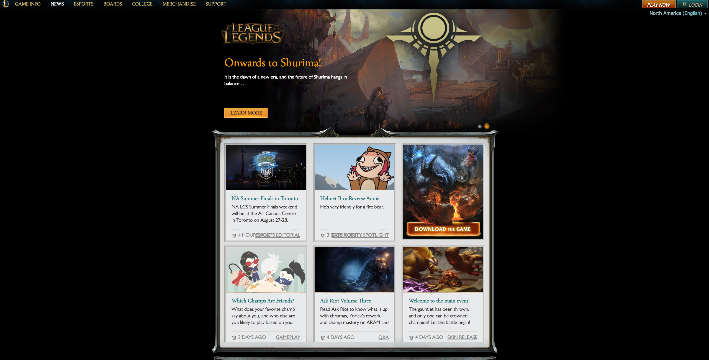
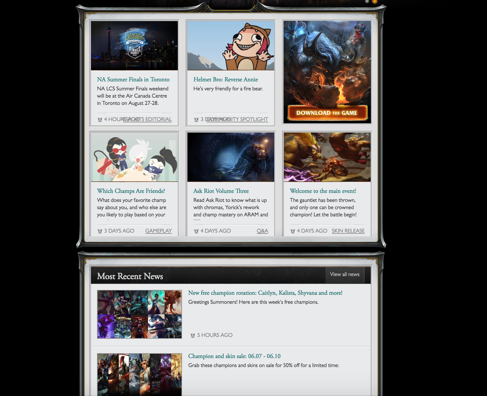
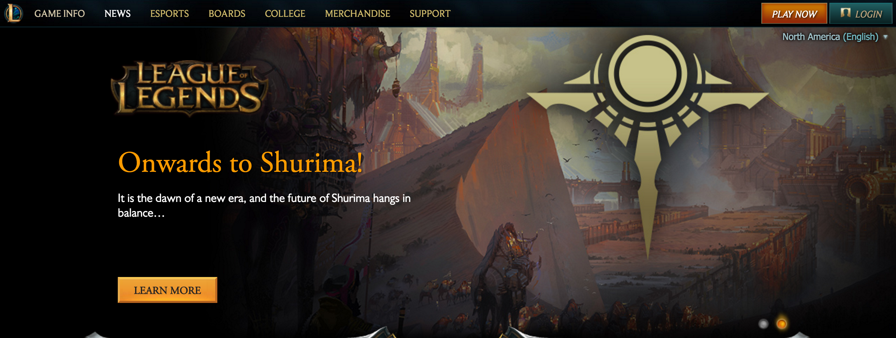

Rule of Thirds:
The League of Legends website as shown in the screenshot below displays a "featured article" section that lines into thirds giving us a good look at how they lined their logo and the decorative pictures to follow the rule of thirds and make it more visually appealing

Modularity:
Looking at the same screenshot above, we can see how they have divided their website into many different moduals through their navbar: game info, news, esports, boards, college, merchandise, and support along with the homepage work togeather to make a cohesive web design that's easy to follow and find the info you are looking for
Signal-to-Noise Ratio:
scrolling down to pictured in the screenshot below shows how little noise there is on the League of legends website. Their center columns are clean and organized to give a nice colorfull feeling without being cluttered by ads and promotions to download the game.

Chunking:
looking at the same screenshot above we can see how the chunking of their website is established by the silver boarders. These borders seperate old news and new news making it easy for the user to understand how the site will be split up with further navigation.
Affordance:
the last screenshot shows the importnace of their well laid out and useful navbar. This bar is the entire navigation tool of the website and allows many of the fuctions of the website to be executed. The bar is displayed on every page and allows you to return to the base levels of navigation from whereever you are in the site.
